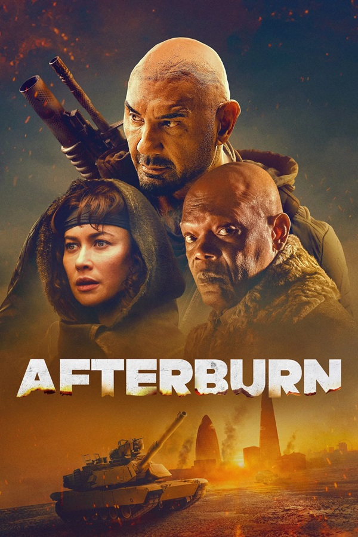

Afterburn
-
Client
Original Film
-
Date
01-15-2025
-
Project link
PROJECT DESCRIPTION
- Role: Matchmove Artist | Contractor
- Core Stack: Camera Tracking / Matchmove Tools
- Main Focus: Camera Tracking, Production Support
This project was a sci-fi action feature film based on the comic book series.
I joined the production briefly between two larger projects to provide short-term assistance for the VFX team.
My contribution was focused entirely on core production tasks, specifically performing solid camera tracking for a
small selection of shots to support the downstream layout and compositing departments.
MY TASKS
-
Camera Tracking and Plate Ingest:
I performed precise camera tracking and matchmove operations on a handful of assigned shots.
My focus was on ensuring that the virtual cameras were perfectly locked to the live-action footage, providing a stable foundation for the environment team.